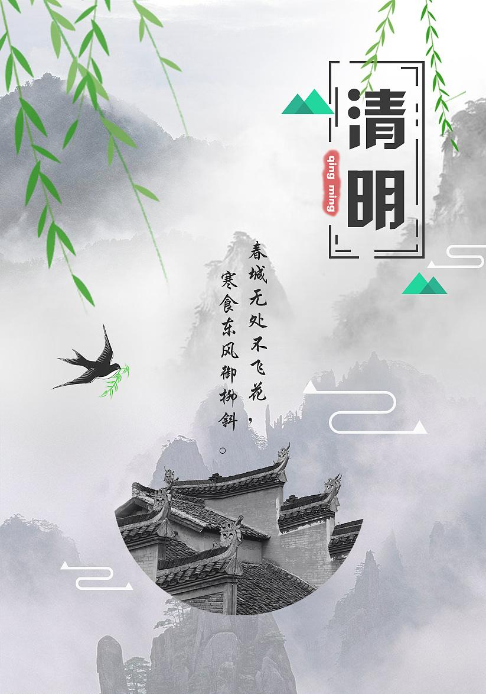
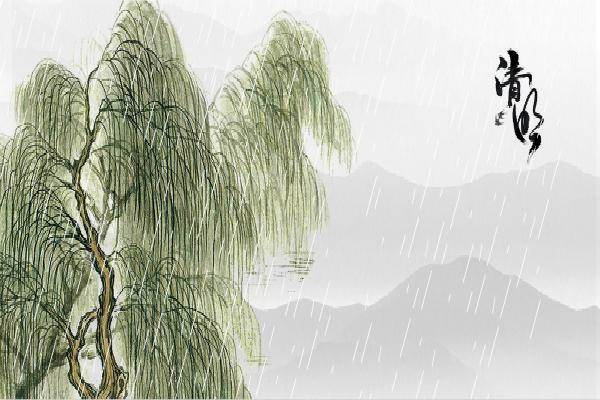

yxr2333.github.io
2021.4.7
清明
时节雨纷纷
路上
行人
欲断魂
清明节，又称踏青节、行清节、三月节、祭祖节等，节期在仲春与暮春之交。清明节源自上古时代的祖先信仰与春祭礼俗，兼具自然与人文两大内涵，既是自然节气点，也是传统节日。扫墓祭祖与踏青郊游是清明节的两大礼俗主题，这两大传统礼俗主题在中国自古传承，至今不辍。
2021/4/7
What
清明节是中华民族古老的节日，既是一个扫墓祭祖的肃穆节日，也是人们亲近自然、踏青游玩、享受春天乐趣的欢乐节日。斗指乙（或太阳黄经达15°）为清明节气，交节时间在公历4月5日前后。这一时节，生气旺盛、阴气衰退，万物“吐故纳新”，大地呈现春和景明之象，正是郊外踏青春游与行清墓祭的好时节。清明祭祖节期很长，有10日前8日后及10日前10日后两种说法，这近20天内均属清明祭祖节期内。
When
清明节，又称踏青节、行清节、三月节、祭祖节等，节期在仲春与暮春之交。清明节源自上古时代的祖先信仰与春祭礼俗，兼具自然与人文两大内涵，既是自然节气点，也是传统节日。扫墓祭祖与踏青郊游是清明节的两大礼俗主题，这两大传统礼俗主题在中国自古传承，至今不辍。
Why
清明节是传统的重大春祭节日，扫墓祭祀、缅怀祖先，是中华民族自古以来的优良传统，不仅有利于弘扬孝道亲情、唤醒家族共同记忆，还可促进家族成员乃至民族的凝聚力和认同感。
借
问酒家何处有？牧童遥指杏花村
——杜牧《清明》
清明节，是中华民族最隆重盛大的祭祖大节，属于礼敬祖先、慎终追远的一种文化传统节日。清明节凝聚着民族精神，传承了中华文明的祭祀文化，抒发人们尊祖敬宗、继志述事的道德情怀。扫墓，即为“墓祭”，谓之对祖先的“思时之敬”，春秋二祭，古已有之。
清明节历史悠久，源自上古时代的祖先信仰与春祭礼俗。据现代人类学、考古学的研究成果，人类最原始的两种信仰，一是天地信仰，二是祖先信仰。
据考古发掘，广东英德青塘遗址发现了万年前的墓葬，是中国年代最早的可确认葬式的墓葬，表明上古先民在万年前已具有明确的有意识墓葬行为与礼俗观念。“墓祭”礼俗有着久远的历史源头，

清明“墓祭”是传统春季节俗的综合与升华。上古干支历法的制定为节日形成提供了前决条件，祖先信仰与祭祀文化是清明祭祖礼俗形成的重要因素。清明节俗丰富，归纳起来是两大节令传统：一是礼敬祖先，慎终追远；二是踏青郊游、亲近自然。清明节不仅有祭扫、缅怀、追思的主题，也有踏青郊游、愉悦身心的主题，“天人合一”传统理念在清明节中得到了生动体现。

|传统节日
1、《清明》
------唐·杜牧
2、《闾门即事》
------唐·张继
3、《长安清明言怀》
------唐·顾非熊
4、《郊行即事》
------宋·程颢
5、《清明日园林寄友人》
------唐·贾岛
Qing Ming